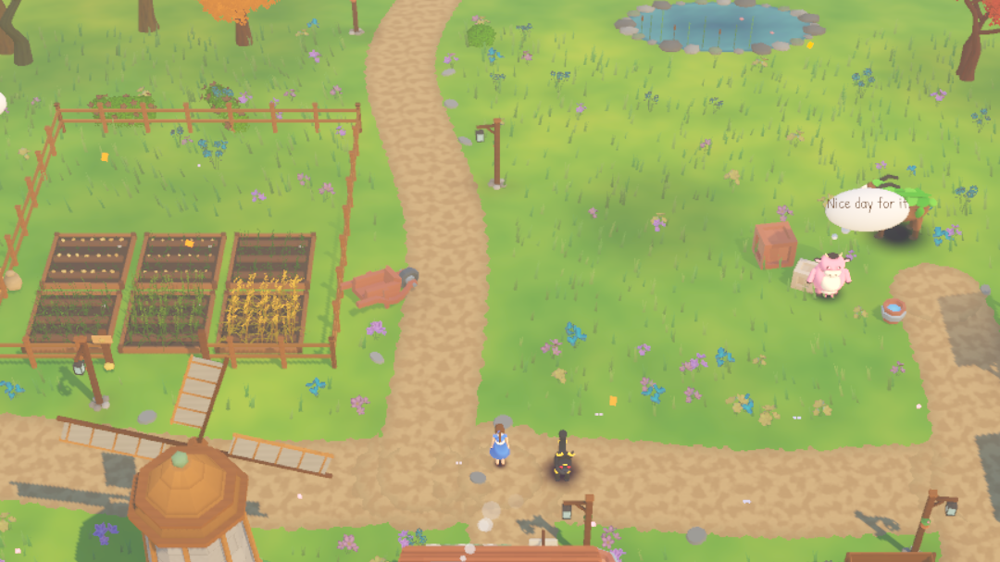
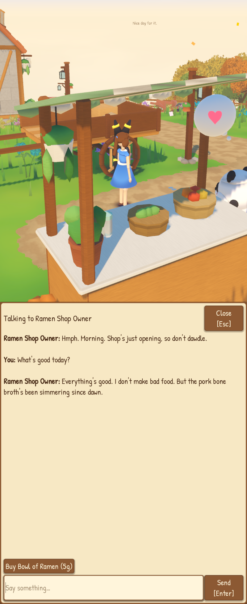
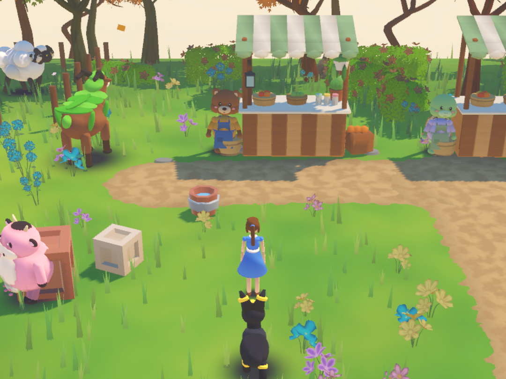
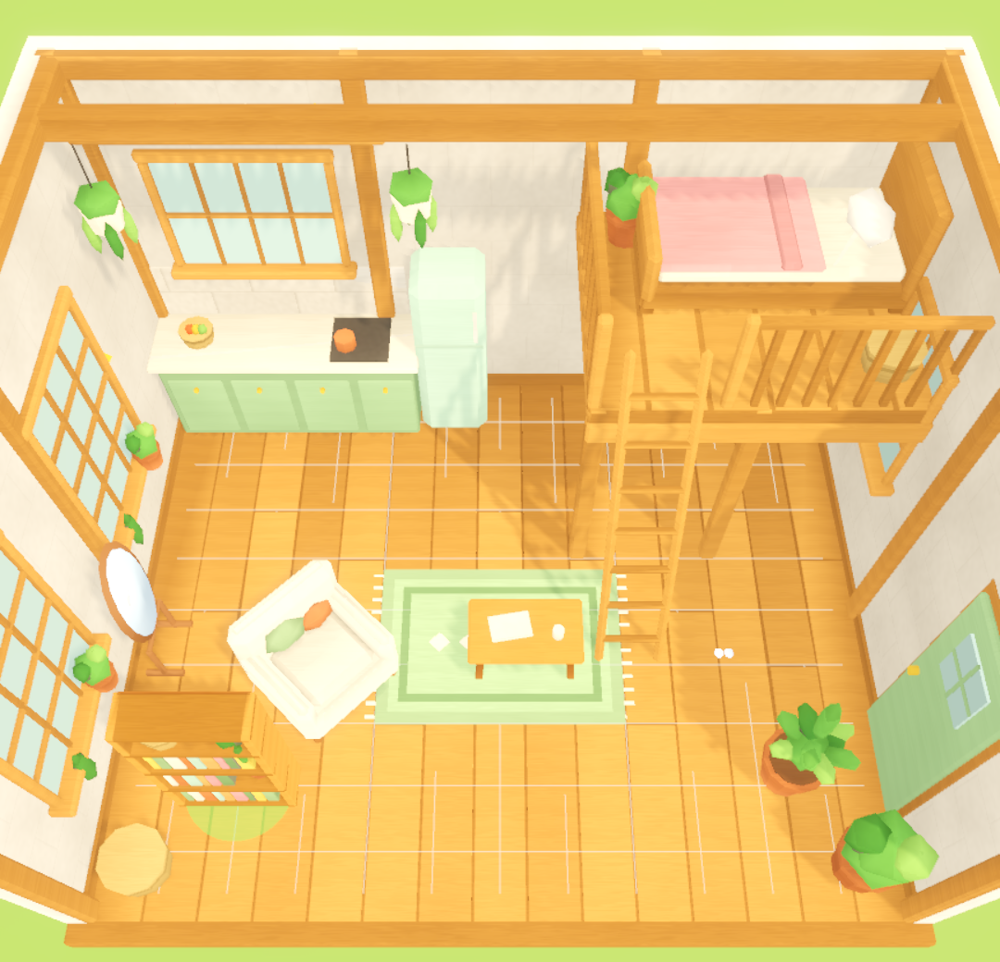
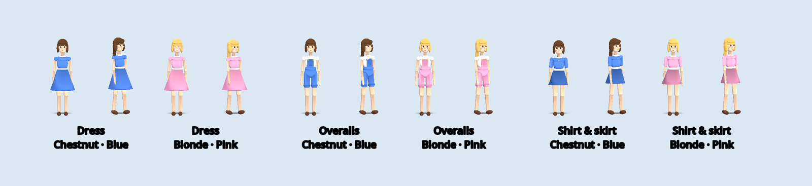
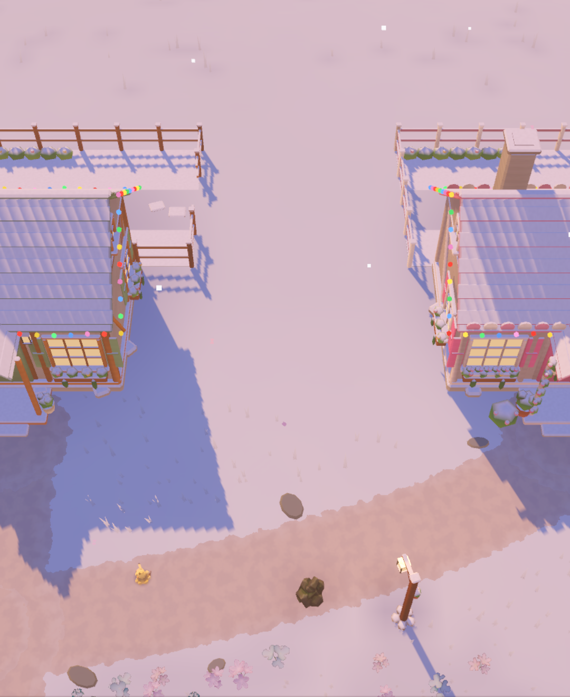
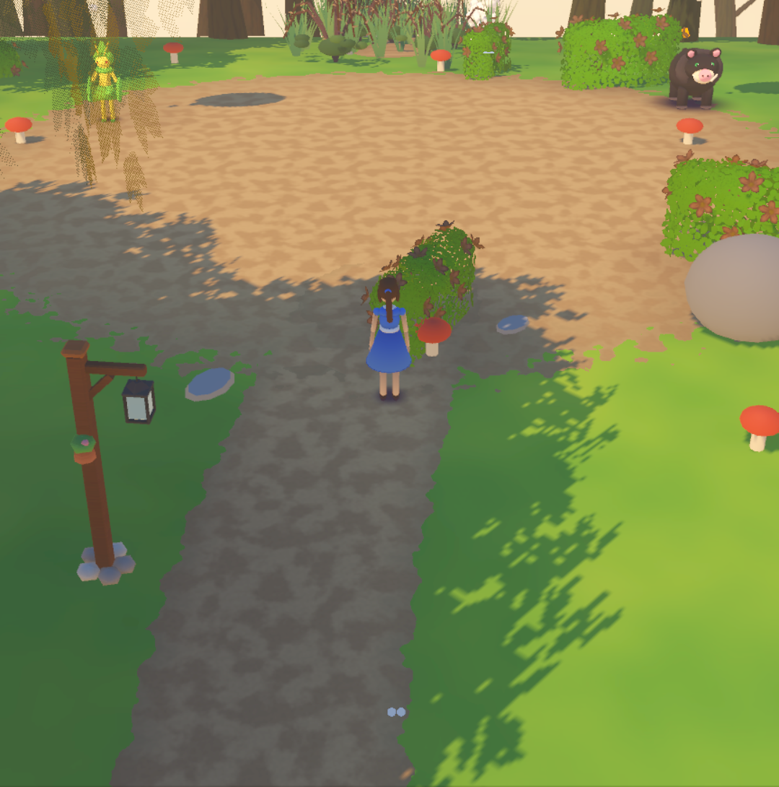

How it started: ChatGPT first, then Claude Code
Before there was a single line of code, I spent ages in ChatGPT just brainstorming: what the farm is, which Pokémon live on it, who the shopkeepers are, and the whole story about Shaymin's Glade (the forgotten stones, the holidays as clues, the Chinese New Year ending). ChatGPT is good for that bit. You throw half-ideas at it and it throws more back.
Once the ideas were properly written down as design docs, the project moved to Claude Code, which actually builds things: it writes the code, runs the tests, renders screenshots to check its own work, and keeps a running list of questions for me (the designer, obviously) to answer. ChatGPT was the notebook. Claude Code is the workshop.
What you actually do
No winning, no losing. Just very organised busywork:
- Pick who's playing (Claire or Chloe) and land on the shared farm.
- Plant crops — they grow in about 5 minutes, because nobody has time for real farming.
- Collect milk, wool, honey and eggs from the farm Pokémon.
- Turn it into food, drinks and clothes at the workshops (your partner Pokémon helps with chores).
- Chat with the shopkeepers in town — type literally anything.
- Decorate your room, change your outfit, hit milestones to unlock upgrades.
- Follow the clues to Shaymin's Glade. No spoilers.
The five pieces
It's a lot bigger than my last games. Here's what holds it together:
Who does what (the machines, not us)
Five things pass the work along, kind of like a relay race:
- Claude Code runs on the iMac. It writes the game code, and it also writes Python scripts for Blender.
- Blender runs those scripts and builds the 3D models (the cottages, workshops, furniture and the Pokémon) out of code. Nobody sculpts anything by hand, which is great, because neither of us can.
- Godot (also on the iMac) takes those models and turns everything into the actual game. Claude Code runs Godot from the command line to test the game and take screenshots, so it can SEE whether the barn is upside down before I do.
- When a new version is ready, the iMac exports an Android app and uploads it to the NAS (the little always-on storage box at home). Our phones check the NAS and update themselves.
- The NAS also runs the game server that holds the shared farm, and a "Farm Host" that passes shopkeeper conversations to Claude. It keeps daily backups of the save too. So the phones work even when the iMac is off. Everything talks over Tailscale, a private network only our devices can join.
Short version: Claude Code writes it on the iMac, Blender shapes it, Godot builds it, the NAS hosts it, and the phones play it.
What's going on inside
One farm, two phones
server · SQLite · TailscaleBoth phones connect to the Farm Host, which keeps the ONE true copy of the farm. If Chloe harvests the wheat, it's gone on my screen too (rude, but correct). We each have our own wallet and bag, and bedtime only skips to morning when everyone's actually in bed.
Shopkeepers that actually talk
Claude · ramen panda, tea turtle, upgrade bearWhen you type to a shopkeeper, the game sends their personality, what they know, and your message to Claude. The reply comes back with words AND an expression, so they get a little emote bubble and a gesture to match.

Pokémon doing the actual work
scripts/runtime · production cyclesEvery farm Pokémon runs the same loop: make something, idle, get fed, repeat. Each one has its own morning greeting and a signature antic. Your partner follows you around and runs chores in the workshops.

Decorating & dressing up
Maker Studio · wardrobe · decorate modeEveryone has their own room to decorate, and a wardrobe for outfits, hair and colours, saved on the server so the other person sees your look too. Furniture snaps to the grid. Mostly.


Real holidays, real story
Halloween · Christmas · Chinese New YearSeasons follow the real calendar. At Christmas the leaves turn into snow, the berries become Berry Tarts and a tree goes up. Each holiday is also a chapter of the story about the forgotten glade, which finishes at Chinese New Year.


The design / tech split
I write the design answers (what the milestones are, what each Pokémon's antic is, whether Mimikyu should be life-size — yes, obviously). The build then hands me back a list of designer questions, I answer them, and the next version shows up on my phone by itself. It's basically a very slow group chat with a game engine.
Where's the code? It's closed source for now, mostly because it's nowhere near done and I'd rather not have strangers judging my half-built barn. Once it's finished, I plan to open source it on my GitHub.